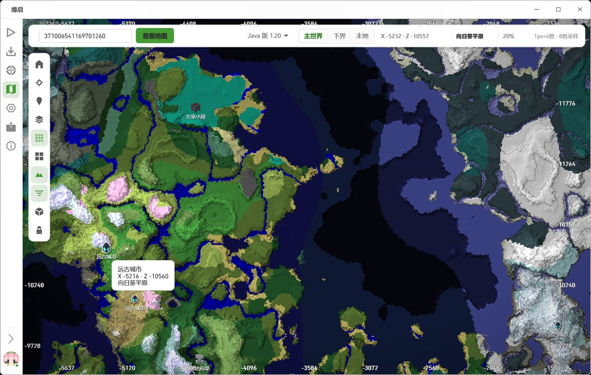
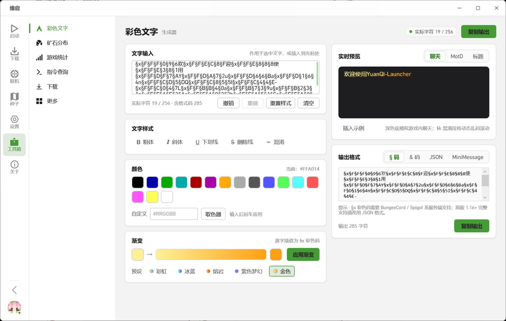
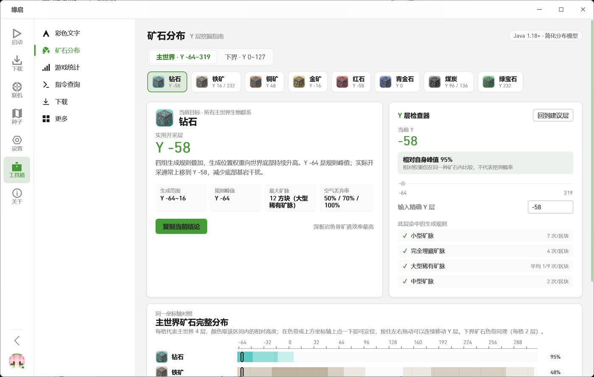
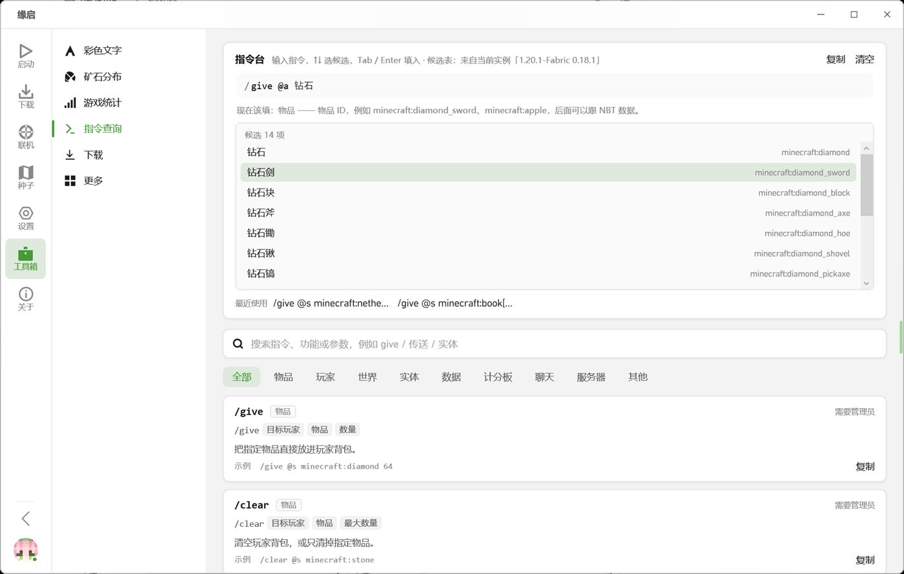

开游戏前，该设的都摆在你眼前
版本、加载器、Java 与分到的内存写在同一张卡上，看清楚直接点「启动游戏」。
01日常
从选版本、开游戏，到翻存档、装整合包、收拾旧版本——不用记路径，也不用去翻文件夹。
版本、加载器、Java 与分到的内存写在同一张卡上，看清楚直接点「启动游戏」。
种子、版本、大小、玩家一读就有；规则、坐标、经验能改，动手前自动备份。
包里要的 Forge、NeoForge、Fabric、OptiFine 一起装好；装 Mod 前先看前置缺不缺。
每个版本占多少一眼能看到；很久没开的打包收起来，点一下自动解压还原。
PCL、HMCL、官方启动器里玩过的版本、存档、Mod 都能接过来，想只搬几个版本也行。
读崩溃原因，指出是哪个加载器、哪个 Mod 或哪个 Java 版本对不上，再给下一步。
正版、离线、外置登录放在一个账号池里，点一下切换，头像各自缓存。
缺什么运行库、少了哪个组件会直接写出来；想同时开两个客户端也行。
首页顶部汇总当天的版本动态，下面一排常用站点，内容缓存在本地。
02界面
启动、下载、联机、种子、设置、工具箱、关于，左边一条导航走完。 从别的页面切回来，还停在你上次看到的位置。
向下滚动，本区块横向展开 左右滑动切换









03联机
房主点「创建房间」，把邀请码发给你；你粘贴、回车，就进去了。 不用公网 IP，也不用去路由器上开端口。
04种子地图
把种子填进去就能看地形：主世界、下界、末地分开渲染，生物群系和结构想筛哪个筛哪个。 找到想去的地方，右键就能把坐标复制走，六种格式随你挑。 计算全在你自己的电脑上，种子不会传出去。
05工具箱
彩色文字、矿石分布、游戏统计、指令查询，都在启动器里，不用另开网页。全部在本地算，不上传任何内容。
打一句话，逐字渐变自己就出来了，右边能直接看到聊天栏和 MotD 的效果。复制走就能贴进游戏或服务器配置。
想知道钻石在哪个高度最好挖？拖动 Y 层，这一层会出什么矿、概率多高，一眼就能看明白。
这个月玩了多少小时、哪几天玩得最凶、哪个版本花的时间最多，都给你算好了，最长能看四个月。
记不住指令写法？按分类翻，候选项跟着你当前玩的版本走，常用指令带例子，点一下就能复制。
06个性化
十四种主题色随手挑，也能自己调色相和饱和度。背景可以换成你喜欢的图片——本地文件夹里的、或者网上的都行， 透明度和模糊也能调。
界面能放大缩小，高分屏也不糊；用不到的页面可以藏起来，眼不见心不烦。设置还能导出带走。
点一下，这页的主题色立刻跟着变
07下载
安装包放在 GitHub Releases，下最新的那个就行。
点下面的按钮，下载 YuanQi-Setup.exe。双击就能装，不用先装别的东西。
程序、资源和联机模块装在一起；你的设置和存档放在同一个文件夹里，不会散到系统各处，以后想删干净也很简单。
第一次打开会带你选版本和内存，选完点启动。电脑里已经有 .minecraft 的话，直接指过去就能接着用，不用重新下载游戏。
需要 Windows 10 及以上。安装时要一次管理员权限，装完之后平时都以普通权限运行。
以后升级还是用同一个安装包，只换程序文件，你的设置和游戏都留着。卸载时会问你要不要连存档一起删。
08问答
缘启是基于龙腾猫跃（LTCat）开发的 Plain Craft Launcher 开源版本二次创作的，界面、联机接入和启动流程都做过重做。它不是 PCL 官方版本，和 PCL 官方没有关系；原作者的署名和赞助入口在「关于」页里。
不一定。微软账户会走正版验证；也可以用外置登录（Authlib-Injector 服务器）或者离线账户玩单人世界和自建服务器。启动器会提醒支持正版，但不会强制。
不会。缘启没有内置任何上报通道，登录凭据、设置和缓存都只存在你自己的文件夹里。唯一会写进系统的地方，是你主动勾选「使用高性能显卡」时写入的一条显卡偏好设置。
Forge、NeoForge、Fabric、LiteLoader、OptiFine 都支持（暂不支持 Quilt）。Mod 和整合包来自 Modrinth 与 CurseForge，原版游戏走官方源和国内镜像；装整合包时会按包里的清单把加载器补齐，装 Mod 前会检查前置依赖。
能。在启动页点「添加文件夹」，指到你原来的 .minecraft 就行，里面的版本、存档、资源包会直接出现在列表里；整合包压缩包也能直接拖进来。游戏文件不用重下，只需要装一次启动器。
Windows 10 及以上即可。启动器本身基于 .NET Framework 4.8；内置浏览器和部分动画需要 WebView2 运行时；联机模块需要 VC++ 运行库。这几个组件缺了会直接提示你，不会让你自己去猜。